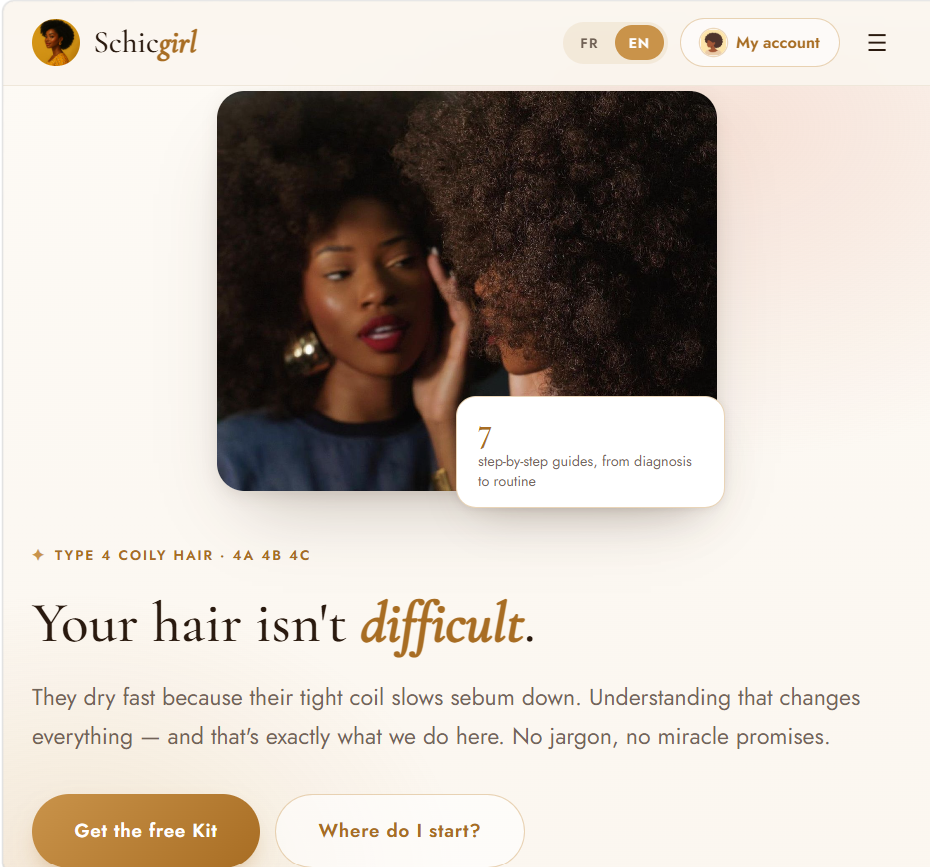

Schicgirl™
The bilingual (FR/EN) natural-hair brand I build and maintain end-to-end — a dozen-plus live pages for Type 4 hair, each with its own admin dashboard, from storefront to AI assistant.
Built — I'm the full-stack developer behind Schicgirl™, a bilingual natural-hair brand for Type 4 hair. I design, build, and maintain the whole product surface — the link-in-bio hub, sales pages, customer tools, and the admin dashboard behind nearly every one of them. It's all hand-written HTML/CSS/JS with no build step, served from GitHub Pages, and wired to Supabase and Google Apps Script where it needs real persistence.
Shipped tools —
- CoilCare AI™ Conversational Type 4 hair assistant on the Anthropic Claude API, client-side key.
- HydraCheck Hydration/porosity diagnostic with a full leads dashboard.
- SchicChat Bilingual diagnostic chatbot, leads backed by Google Sheets.
- Link-in-bio hub A conversion-ladder homepage with a visual content editor and click/visit analytics.
- Booking + reviews Consultation flow with admin dashboard; Supabase-backed reviews that surface on the hub.
- Freebie funnel Lead-magnet landing, subscriber dashboard, and self-hosted bilingual PDF delivery.
- Sales pages & affiliate site Six ebook pages plus a porosity-sorted Amazon mini-site with its own editor.
Learned — Almost everything I know about shipping software end-to-end, I learned here: two languages, a real LLM API, admin tooling that gets used daily, and the discipline of supporting something that's live. Building for a real, active community is the fastest feedback loop I've found.
